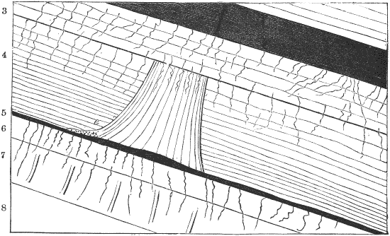

FAQs Artikel
Stratigraphie in Verbindung mit aufrechten Baumstümpfen
Legacy-Route: /faqs/polystrate/dawson_tree2.html · Quelle: faqs/polystrate/dawson_tree2.html
Stratigraphie in Verbindung mit einem aufrechten Baumstumpf

Bildunterschrift:
"1.=Schiefer. 2.=Schieferkohle, 1 Fuß. 3.
Unterkohle mit Wurzeln, 1 Fuß 2 Zoll. 4. Grauer Sandstein,
der nach unten in Schiefer übergeht, 3 Fuß. Aufrechter Baum mit Stigmaria
Wurzeln (e) auf der Kohle. 5. Kohle, 1 Zoll. 6. Unterkohle mit
Wurzeln, 10 Zoll. 7. Grauer Sandstein, 1 Fuß 5 Zoll.
Stigmaria Wurzeln fortgesetzt von der darüberliegenden Schicht; aufrechter
Calamites. 8. Grauer Schiefer, mit Pyrit. Abgeflachte
Pflanzen."